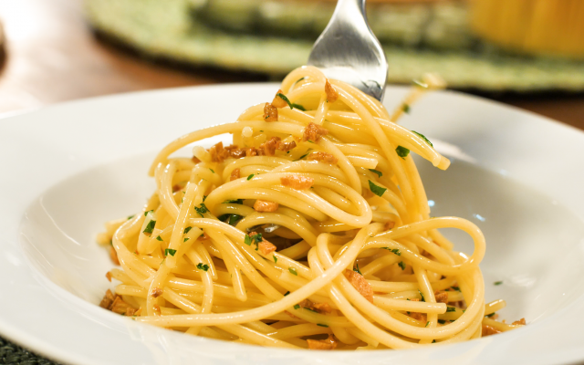

Home
Pasta with garlic and oil

Description
That simple and practical recipe that everyone loves: pasta with garlic and oil! The
presence of golden garlic gives a unique flavor to this dish!
Ingredients
- 5 crushed garlic cloves
- 1 tablespoon butter
- 5 tablespoons of oil
- Salt to taste
Steps
- Mash the garlic well together with the salt, forming a paste.
- In a frying pan, place the crushed garlic and oil.
- Fry over medium heat without letting the garlic burn, just brown.
-
Add the butter and let it boil a little, just to incorporate the flavor well,
stirring constantly.
- Place over the pasta immediately.